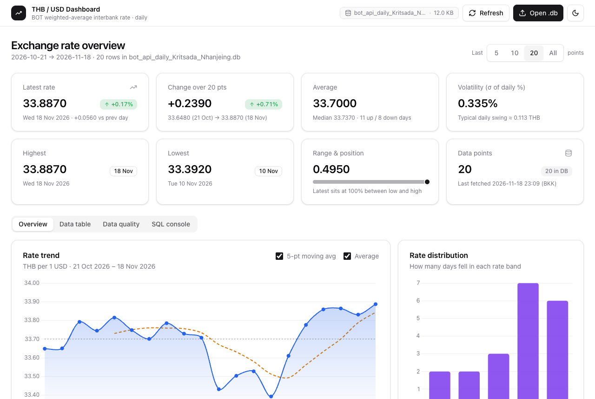

1. ภาพรวม
| หัวข้อ | รายละเอียด |
|---|---|
| แหล่งข้อมูล | BOT API Portal – Exchange Rates |
| API | Weighted-average Interbank Exchange Rate – THB / USD |
| Endpoint | https://gateway.api.bot.or.th/Stat-ReferenceRate/v2/DAILY_REF_RATE/ |
| ข้อมูลที่ดึง | ย้อนหลัง 20 data point (รายวัน, เฉพาะวันทำการที่ BOT เผยแพร่) |
| ปลายทาง | SQLite .venv/bot_api_daily_{ชื่อผู้สมัคร_Eng}.db (append) |
| เครื่องมือ | uv |
ขั้นตอนการทำงานของโปรแกรมในหนึ่งครั้งที่รัน:
- คำนวณช่วงวันที่: วันนี้ (เวลาไทย) ย้อนหลังได้สูงสุด 45 วันปฏิทิน (ครอบคลุมเสาร์-อาทิตย์และวันหยุดนักขัตฤกษ์)
- เรียก
GET DAILY_REF_RATE/?start_period=…&end_period=…พร้อม headerAuthorization— BOT จำกัดช่วงวันที่ ไม่เกิน 31 วันต่อ request โปรแกรมจึงแบ่งเป็นช่วงละ ≤31 วันและย้อนไปเรื่อย ๆ จนได้ครบ 20 จุด (ปกติใช้ 1 request) - เลือกเฉพาะ 20 วันล่าสุด ที่มีข้อมูล
- บันทึกลง SQLite: วันใหม่ถูก append, วันที่มีอยู่แล้วและค่าเท่าเดิมจะไม่ซ้ำ, ถ้า BOT แก้ตัวเลขจะอัปเดตค่านั้น
2. สิ่งที่ต้องมี
- uv (จะติดตั้ง Python 3.12 ให้อัตโนมัติ)
- บัญชีบน BOT API Portal และ API Token (ดูหัวข้อถัดไป)
3. รับ API Token
- สมัคร/เข้าสู่ระบบที่ portal.api.bot.or.th
- สร้าง Application แล้ว Subscribe ผลิตภัณฑ์ Exchange Rates (Plan: 200 calls / ชั่วโมง)
- คัดลอก Client ID / API key ของ Application — นี่คือค่า
BOT_API_TOKEN
Authorization: <token> ตรง ๆ (ไม่ต้องมีคำว่า Bearer) และไม่ควร commit ลง Git4. ติดตั้ง
git clone <repo-url> bot-fx-workflow
cd bot-fx-workflow
uv sync # สร้าง .venv และติดตั้ง dependencies
cp .env.example .env # แล้วแก้ไฟล์ .envไฟล์ .env:
BOT_API_TOKEN=ใส่_token_ของคุณ
APPLICANT_NAME=Kritsada_NhanjeingAPPLICANT_NAME คือชื่อผู้สมัครภาษาอังกฤษ ใช้ตั้งชื่อไฟล์ฐานข้อมูล (ช่องว่าง/อักขระพิเศษจะถูกแปลงเป็น _)
5. การรัน
uv run bot-fx --dashboardคำสั่งเดียว: ดึงข้อมูลล่าสุด → บันทึกลง SQLite → เปิดเบราว์เซอร์พร้อม Dashboard ที่โหลดข้อมูลให้แล้ว (ไม่ต้องเลือกไฟล์) กด Ctrl+C ในเทอร์มินัลเมื่อต้องการปิด

- Overview — KPI (ล่าสุด, เฉลี่ย, สูง/ต่ำ, volatility) และกราฟแนวโน้ม
- Data table — ค้นหา เรียง และส่งออก CSV
- Data quality — ตรวจความครบถ้วนของข้อมูล
- SQL console — query ฐานข้อมูลแบบอ่านอย่างเดียว
ดูข้อมูลเดิมโดยไม่ดึงใหม่: uv run bot-fx-dashboard · รายละเอียดเพิ่มเติม: หัวข้อ 7
รันเฉพาะดึงข้อมูล (ไม่เปิด Dashboard)
uv run bot-fxตัวอย่างผลลัพธ์:
fetched 20 points (2026-10-22 .. 2026-11-18)
inserted=20 updated=0 unchanged=0
db: /path/to/project/.venv/bot_api_daily_Kritsada_Nhanjeing.db
2026-11-18 32.0000
...รันซ้ำได้ปลอดภัย: ครั้งถัดไปจะได้ inserted=0 unchanged=20 (หรือ inserted=1 เมื่อมีวันทำการใหม่)
uv run pytest6. ฐานข้อมูล
ที่อยู่ไฟล์: .venv/bot_api_daily_{ชื่อผู้สมัคร_Eng}.db ตาราง daily_ref_rate
| คอลัมน์ | ชนิด | ความหมาย |
|---|---|---|
period | TEXT (PK) | วันที่ YYYY-MM-DD |
rate | REAL | อัตราถัวเฉลี่ยถ่วงน้ำหนัก (บาท / 1 USD) |
currency_pair | TEXT | THB/USD |
source_api | TEXT | ชื่อ API ต้นทาง |
fetched_at | TEXT | เวลา (UTC) ที่บันทึก/อัปเดตแถวนั้นล่าสุด |
ตัวอย่าง query:
sqlite3 .venv/bot_api_daily_Kritsada_Nhanjeing.db \
"SELECT period, rate FROM daily_ref_rate ORDER BY period DESC LIMIT 20;".venv ตามโจทย์ — การลบ/สร้าง .venv ใหม่ (เช่น rm -rf .venv) จะทำให้ข้อมูลหาย ควรสำรองไฟล์ก่อน7. ดูข้อมูลด้วย Dashboard
| วิธี | คำสั่ง / ขั้นตอน |
|---|---|
| ดึงใหม่ + เปิดเลย | uv run bot-fx --dashboard |
| เปิดข้อมูลเดิม | uv run bot-fx-dashboard (ตัวเลือก --port, --no-open) |
| เปิดไฟล์เอง | เปิด docs/dashboard.html ในเบราว์เซอร์ (แนะนำ Chrome/Edge) → กด Open .db → เลือกไฟล์ใน .venv/ (โฟลเดอร์ซ่อน: กด ⌘ Shift .) |
เซิร์ฟเวอร์ทำงานบน 127.0.0.1 เท่านั้น และเสิร์ฟแค่หน้า Dashboard กับไฟล์ DB (ไม่เปิดเผย .env) ข้อมูลประมวลผลในเบราว์เซอร์ ไม่ถูกอัปโหลด หลังรัน uv run bot-fx ใหม่ให้กดปุ่ม Refresh ในหน้า Dashboard
8. ตัวเลือก
| Option / ENV | ค่าเริ่มต้น | คำอธิบาย |
|---|---|---|
BOT_API_TOKEN | — | จำเป็น. API key ของ BOT |
APPLICANT_NAME / --applicant | Kritsada_Nhanjeing | ชื่อผู้สมัครภาษาอังกฤษในชื่อไฟล์ DB |
--days N | 20 | จำนวน data point รายวัน |
--lookback-days N | 45 | จำนวนวันปฏิทินสูงสุดที่ย้อนหลัง (แบ่งเรียกช่วงละ ≤31 วัน; เพิ่มถ้าได้ไม่ครบ) |
BOT_DB_PATH / --db-path | .venv/… | เปลี่ยนที่เก็บไฟล์ DB |
9. รันอัตโนมัติ (ทางเลือก)
BOT เผยแพร่ข้อมูลทุกวันทำการเวลา 18:00 น. ตัวอย่าง cron (จันทร์–ศุกร์ 18:30 น. เวลาไทย):
30 18 * * 1-5 cd /path/to/bot-fx-workflow && uv run bot-fx >> run.log 2>&110. แก้ปัญหา
| อาการ | สาเหตุ / วิธีแก้ |
|---|---|
BOT_API_TOKEN is not set | ยังไม่ได้ตั้งค่าใน .env หรือ environment |
HTTP 401 … Authorization field missing | token ว่าง/ผิด หรือยังไม่ได้ Subscribe ผลิตภัณฑ์ Exchange Rates |
HTTP 429 | เกินโควตา 200 calls/ชั่วโมง — โปรแกรมจะ retry เอง รอสักครู่แล้วรันใหม่ |
HTTP 400 … Exceed limit period | ช่วงวันที่ต่อ request เกิน 31 วัน — เวอร์ชันนี้แบ่งช่วงให้อัตโนมัติแล้ว |
warning: only N of 20 data points | ช่วงวันหยุดยาว — เพิ่ม --lookback-days 60 |
| ไม่พบไฟล์ DB | ดูพาธจากบรรทัด db: ตอนรัน; ไฟล์ซ่อนอยู่ใน .venv/ |